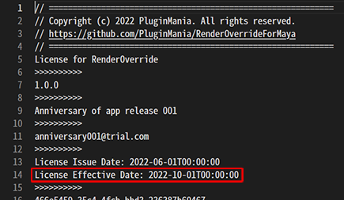
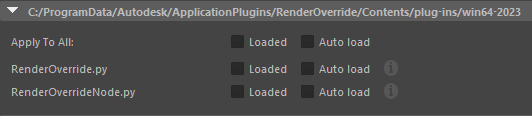
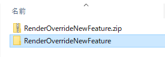
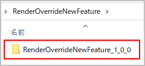
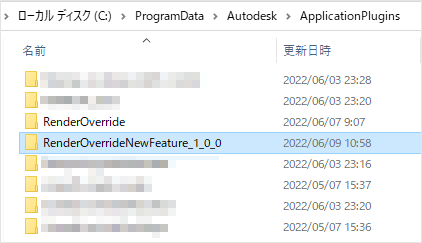
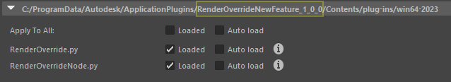

For consumer panelist¶
Contents of this page:
Request to check for new software versions¶
We are looking for survey panelist to help us prepare for the release of a new version of this software.
We ask that you actually use the tool, give us feedback on how it feels to use, and report bugs.
Survey panelist will receive program files and licenses for the new version from the developer.
Can be used commercially while the license is valid
If you are already a subscriber, you may suspend your subscription during the monitoring period.
Please note that if you do not set up a subscription suspension, your fees will continue to be deducted!
If you wish to continue commercial use after the monitoring period, please sign up for a subscription again.
You can check the expiration date with the developer when you receive your license, or you can check the contents of your license file.
The license file is located in
C:/ProgramData/Autodesk/ApplicationPlugins/RenderOverride/Contents.¶
Conditions of the survey, etc.¶
Target |
Persons approved by the developer (whether self-recommended or recommended by others) |
Reward |
No honorarium from the developer to the participants |
Report |
Feedback on usability, bug reports |
Period |
About 1-3 months (with extension) |
No gratuities, but you get the benefit of being the first to use the latest version, free of charge!
How to install/remove a new version¶
Install¶
If you are already using RenderOverride and
Auto Loadin Plug-in Manager is checked, uncheck it.Uncheck this box in advance to prevent conflicts between the already installed executable and the new version (test program) executable.
There is no need to uninstall the already installed, authorized version of the application.

Newer versions of the program files will be shared separately, zipped
Unzip the distributed zip file
In the extracted folder, you will find a folder named
RenderOverrideNewFeature_[VERSION]. (The name of this folder is such that it will not be covered by the folder you installed from the AutodeskAppStore.)Copy the
RenderOverrideNewFeature_[VERSION]folder toC:/ProgramData/Autodesk/ApplicationPlugins/.After copying, start Maya® and check the Plug-in Manager for the
RenderOverrideNewFeature_[VERSION]item and load it.Once successfully loaded, you can use it just like the regular production version
